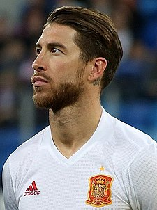

Sergio Ramos García (Camas, Sevilla, 30 de marzo de 1986) es un futbolista español que juega como defensa en el Paris Saint-Germain F. C. de la Ligue 1 de Francia. Formado en las categorías inferiores del Sevilla F. C., debutó en Primera División con el equipo hispalense en 2004. Para la temporada 2005-06 fichó por el Real Madrid Club de Fútbol, equipo del que fue capitán desde el curso 2015-16 y con el que se ha proclamado, entre otros títulos, pentacampeón de Liga, tetracampeón de Europa y tetracampeón del mundo. Además, es el cuarto jugador con más partidos (671) en la historia del conjunto blanco, tras Raúl (741), Iker Casillas (725) y Sanchís (708). Es internacional absoluto con la selección española desde 2005 y fue su capitán desde 2016. Con ella se ha proclamado bicampeón de Europa (2008, 2012), y campeón del mundo (2010). Es el futbolista español con más internacionalidades –desde el 12 de octubre de 2019–, n 1 registro que también posee a nivel europeo tras igualar a Gianluigi Buffon, mientras que a nivel mundial es el futbolista con más victorias en partidos de selección. Elegido por la prestigiosa revista France Football en su Dream Team histórico como uno de los diez mejores centrales de la historia, se encuentra entre los diez defensores con más goles de la historia, en el segundo puesto de la historia del campeonato de liga de España (primero si no se contabilizan los goles de Fernando Hierro cuando jugaba de centrocampista) y el segundo en la historia de la Liga de Campeones (empatado con Gerard Piqué), ambos a un solo gol de empatar a Roberto Carlos, máximo goleador histórico del torneo como defensor. Ha sido nominado al Balón de Oro en seis ocasiones, y ostenta el récord como defensor más premiado en los onces ideales de FIFA (11) y UEFA (8), antes de que el 14 de diciembre de 2020 fuera incluido como defensa central en el tercer Dream Team histórico del Balón de Oro.
Comenzó a jugar en el club de su localidad de Camas, antes de pasar a las categorías inferiores del Sevilla Fútbol Club. Sergio Ramos es otro producto más de la cantera del Sevilla, convirtiéndose así en un importante pilar en el que se apoyaba el Sevilla B, actualmente Sevilla Atlético. En la temporada 2003-04, Sergio Ramos, quien ya apuntaba muy buenas maneras en las secciones inferiores del equipo hispalense, alternó el filial Sevilla Fútbol Club "B" con el primer equipo. Fue Joaquín Caparrós el encargado de hacer debutar al canterano el día 1 de febrero de 2004, en un partido que enfrentó a los sevillistas contra el Real Club Deportivo de La Coruña. Durante su estancia en Sevilla, coincidió con Jesús Navas y con el fallecido Antonio Puerta, en la que fue una de las remesas de canteranos más sobresalientes de la historia del club. Tras solo dos temporadas en el primer equipo y debido a desencuentros con el entonces presidente José María del Nido, fue transferido al Real Madrid Club de Fútbol en el verano de 2005 por 27 millones de euros, convirtiéndose en el momento en el traspaso más caro de la historia por un jugador de su edad. Fue el único jugador español incorporado al club durante la primera presidencia de Florentino Pérez.
En el Real Madrid Club de Fútbol —donde con apenas 19 años llegó a compartir vestuario con futbolistas como Zinedine Zidane, Roberto Carlos, Raúl González, David Beckham o Ronaldo Nazário, conocidos como «los galácticos»— le fue asignado el dorsal número 4, —dorsal de gran historia dentro del club—, vacante por la salida del excapitán Fernando Hierro. Respecto a esto Ramos ya había comentado que “El dorsal que más me gusta es el 4. Portar el de Fernando Hierro sería un orgullo”, demostrando así la confianza que tenía en sí mismo. Debutó como madridista el 10 de septiembre de 2005 —bajo las órdenes del técnico brasileño Vanderlei Luxemburgo— durante un partido de Liga contra el Real Club Celta de Vigo en el Santiago Bernabéu. Ramos entró tras el descanso en reemplazo de Francisco Pavón donde el Madrid acabó perdiendo por 2-3. Su primer gol lo marcó el 6 de diciembre del mismo año —de cabeza tras una falta lanzada por Raúl Bravo— en una derrota en Liga de Campeones contra el Olympiakós Peiraiós en Atenas. En su primera temporada defendiendo la camiseta blanca llegó a convertir seis goles en todas las competiciones: en liga, dos al Málaga Club de Fútbol, uno al Real Club Deportivo Mallorca, y uno al Real Club Deportivo de La Coruña; uno en Copa del Rey frente al Athletic Club; y el ya mencionado en Liga de Campeones frente al club griego. En su segunda campaña Ramos fue uno de los referentes del equipo de las remontadas de Fabio Capello, sucesor de Luxemburgo. El sevillano fue pieza básica junto a hombres como Roberto Carlos, Ruud van Nistelrooy o Iker Casillas para que el Madrid lograra el título de Liga. Cabe destacar que Ramos disputó los decisivos encuentros del final de aquella temporada con el tabique nasal roto. La lesión —producida por un golpe en el rostro de Roy Makaay— ocurrió el 7 de marzo de 2007 cuando el Madrid quedó eliminado de la Liga de Campeones tras caer ante el Bayern de Múnich en Alemania. «No es momento para dejar tirado al equipo. Ya me operaré cuando acabe la Liga» le dijo Ramos a los doctores cuando estos —tras examinarlo en los días posteriores— le informaron que debía operarse. Recién en junio —al inicio de sus vacaciones— pasó por el quirófano. Esa temporada volvió a conseguir un registro de seis goles: cinco en Liga —uno de ellos ante el Fútbol Club Barcelona en el empate 3-3 del Camp Nou— y otro en Liga de Campeones. El 11 de julio de 2007 —antes del inicio de su tercera temporada en el Madrid— Ramos firmó una mejora de contrato. El sevillano se mostró «contento» y se refirió también a la contratación del central alemán Christoph Metzelder —fichado en marzo de ese año— asegurando que «me gusta que haya competencia, me gusta que haya jugadores que ocupen mi misma posición». Sin embargo el club no solo fichó a «Metze» sino que también al portugués Pepe. Debido a la llegada de estos dos centrales el sevillano comenzó a jugar de lateral derecho, alternando partidos tanto en esa demarcación como en la de central. La falta de laterales diestros en el equipo y en el mercado —incluso también en la Selección Española— hizo que Ramos terminara por adaptarse a su nueva posición. El 20 de octubre de 2007 —ante el Espanyol— Ramos cumplió 100 partidos de blanco. Pese a la derrota del Madrid en ese partido el defensor celebró su centenario marcando un gol.38 Esa temporada volvió a conquistar el título de Liga. Tras ese verano —el 24 de agosto de 2008— conquistó la Supercopa de España ante el Valencia Club de Fútbol. Ramos marcó el segundo gol del Madrid en el partido de vuelta que acabó con triunfo blanco de 4-2 en el Bernabéu. Durante aquella temporada Ramos cumplió 200 partidos con el Real Madrid (150 de ellos en Liga). El sevillano alcanzó esta cifra el 21 de febrero de 2010 en un partido contra el Villarreal Club de Fútbol. «Es un orgullo cumplir tantos partidos con la camiseta blanca y poder hacer historia. No es algo fácil, y menos en un club tan grande como este. Mi objetivo es seguir sumando partidos y llenar mi palmarés de títulos en este equipo» diría Ramos. Y el 30 de abril de ese mismo año alcanzó —sumando su trayectoria en el Sevilla y en el Madrid— los 200 partidos en Liga. La siguiente temporada —tras la marcha de Raúl y Guti del club— se convirtió en el segundo capitán del equipo tras Iker Casillas. Esa misma campaña —el 29 de noviembre de 2010 tras una expulsión frente al F. C. Barcelona— Ramos igualó a Fernando Hierro como futbolista con más expulsiones en Liga con el Real Madrid. El sevillano recibió su décima tarjeta roja en 175 partidos de Liga con el Madrid mientras que Hierro necesitó 439. Curiosamente, solo días después —el 1 de diciembre— la Federación Sevillana de Fútbol le otorgó el «Premio al Juego Limpio». El 19 de febrero de 2011 ante el Levante U.D. se estrenó como capitán en partido oficial debido a una sanción de Casillas. El 20 de abril de ese mismo año conquistó la Copa del Rey tras derrotar por la mínima al Fútbol Club Barcelona en Mestalla. En las celebraciones posteriores, mientras el autobús con los campeones se acercaba a la Cibeles, a Ramos se le escapó la Copa de las manos cayendo junto a una de las ruedas delanteras del vehículo, y siendo arrollada por el mismo. Esa temporada acabó con un registro de 4 goles: 1 en Liga de Campeones y 3 en Liga. Uno de sus goles —ante el Athletic Club el 20 de noviembre de 2010— causó gran polémica debido a que el sevillano se saltó el protocolo establecido para el lanzamiento de penaltis tomando la responsabilidad por encima de Cristiano Ronaldo y Xabi Alonso. Ramos marcó el penalti, pero Mourinho —que estaba en la grada— pidió explicaciones a su cuerpo técnico. Los primeros nueve partidos de aquella temporada —teniendo en cuenta todas las competiciones— los jugó como lateral derecho. Sin embargo a partir de octubre de 2011 —específicamente desde un partido contra el Espanyol en Cornellà-El Prat— comenzó a hacerlo en la posición de central. Esto debido principalmente a una serie de lesiones del portugués Ricardo Carvalho. En ese mismo partido, además, el sevillano cumplió 200 partidos en Liga con el Real Madrid. En su nueva demarcación destacó de inmediato hasta el punto de que en los primeros siete partidos que encadenó como central el Madrid encajó tan sólo un gol. Como central, además, Ramos no vio mermado su potencial ofensivo y el 19 de octubre marcó —ante el Lyon en Liga de Campeones— su primer gol de la temporada. Incluso el propio Mourinho llegó a declarar en noviembre de ese año que «Sergio ha crecido jugando en esa posición». En enero de 2012 fue incluido en el FIFA/FIFPro World XI como parte del «Once Ideal de 2011». Sin embargo tanto el sevillano como sus compañeros de equipo: Cristiano Ronaldo, Alonso e Iker Casillas —también electos— no pudieron asistir a la gala de premiación recibiendo el reconocimiento casi un mes después. El 26 de febrero de 2020 Ramos sumó su cuarta tarjeta roja por la Liga de Campeones, récord que comparte con Zlatan Ibrahimović y Edgar Davids. Esta temporada jugó su clásico número 44 en la victoria 2-0 sobre Barcelona en el Bernabéu. Después de la suspensión por tres meses de La Liga por la pandemia de COVID-19, Ramos anotó un gol el 14 de junio en la victoria por 3-1 ante la Sociedad Deportiva Eibar en el estadio Alfredo Di Stéfano. El 21 de junio anotó de penal en el 1-2 ante la Real Sociedad de Fútbol en Anoeta, fue el 20 penal convertido consecutivo del jugador por clubes y selección (incluyendo definición a penales). El 28 de junio jugó su encuentro 645 con el Real Madrid, fue en la victoria como visitante por 0-1 ante el Real Club Deportivo Espanyol, con esto Ramos igualó a Carlos Alonso Santillana en el cuarto lugar de encuentros disputados por el club. El 2 de julio, Ramos anotó su quinto penalti consecutivo con el Real Madrid al minuto 79 en la victoria 1-0 contra el Getafe Club de Fútbol, su noveno gol en el campeonato, igualando el récord de un defensor de Ezequiel Garay; este además fue su undécimo gol de la temporada, igualando su mejor marca, acontecida el curso anterior. Además este fue el gol 100 de su carrera, y el número 70 en la primera división. La victoria ante el Getafe fue el encuentro 450 en la Liga de Ramos. Tres días después anotó nuevamente de penalti al Athletic Club, con sus 10 goles en primera esta temporada igualó la marca del defensa Fernando Hierro de la temporada 1993-94. Logró ganar un nuevo título de liga con el Real al término de esta. En el partido de Liga de Campeones correspondiente a la tercera jornada de la fase de grupos marcó su gol cien con la camiseta del equipo madridista, donde cincuenta y cinco de ellos fueron anotados de cabeza. Se convirtió además con la cifra en el defensa más goleador no solo del club, sino de la Primera División de España. De ellos, el club al que más anotó fue al Sevilla Fútbol Club con siete, seguido del Club Atlético de Madrid y del Athletic Club, ambos con seis. El 17 de junio de 2021 anunció que no renovaría con el club.
El 8 de julio de 2021 pasó el reconocimiento médico con el equipo francés y firmó por dos temporadas, si bien su debut hubo de esperar. El jugador, que aún arrastraba lesiones de la temporada anterior en Madrid, donde sólo disputó cinco encuentros en 2021, estuvo casi cinco meses de recuperación hasta que finalmente fue convocado por primera vez con el equipo parisino para la quinta jornada de la fase de grupos de la Liga de Campeones. Disputada frente al Manchester City Football Club, Ramos no participó en el encuentro, pero sí lo hizo el día 28, frente a la Association Sportive de Saint-Étienne en el campeonato francés, disputando los 90 minutos de encuentro. Sin embargo, una fatiga muscular volvió a alejarlo de la actividad.